Fall
Labor Day
USA (September 7)
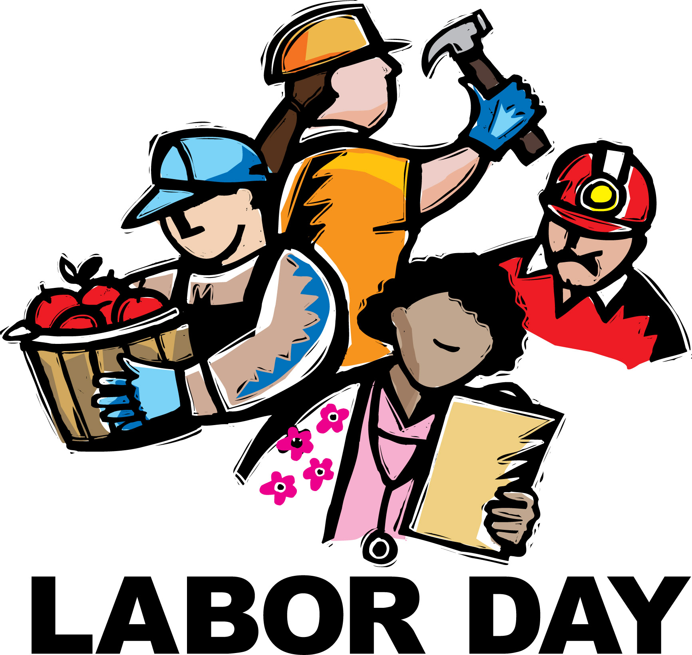
Labor Day is a holiday in the US that is dedicated to workers across the country. The intention of the holiday is to recognize the contributions that laborers make to the United States as a whole. The public holiday always falls on the first Monday in September.
Bestival-Isle of Wight
UK (September 10-13)
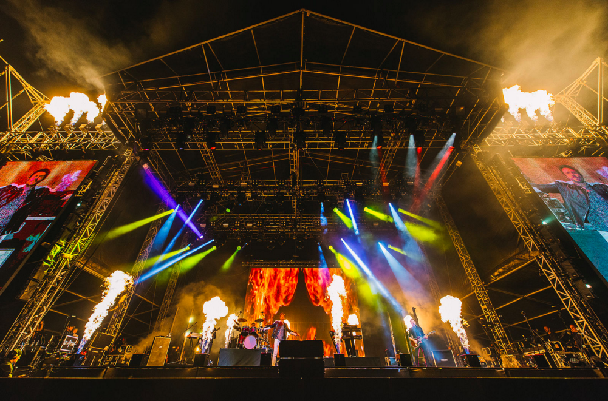
Bestival is an award winning 4 day boutique music festival set at Robin Hill-a beautiful country park in the heart of the Isle of Wight. The world of Bestival was born out of ten fun years of pioneering music events and record releases from Rob da Bank's Sunday Best empire.
Mexican Independence Day
Mexico (September 16)
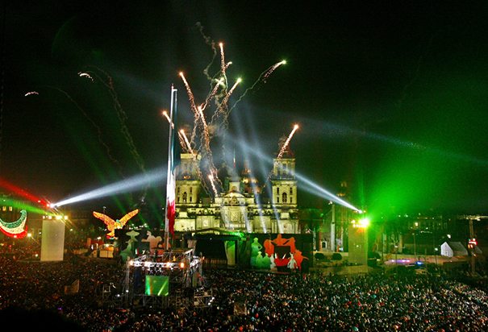
Mexico celebrates its independence every September 16 with parades, festivals, feasts, parties and more. Mexican flags are everywhere and the main plaza in Mexico City is packed.
Oktoberfest
Germany (September 19-October 12)
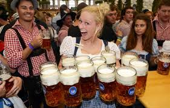
The 1st Oktoberfest was held in 1810 in honor of the Bavarian Crown Prince Ludwig's marriage. The festivities began on October 12 and ended on 17th with a horse race. Later, the celebrations were repeated and the festival was moved forward into September.
Columbus Day
USA (October 12)
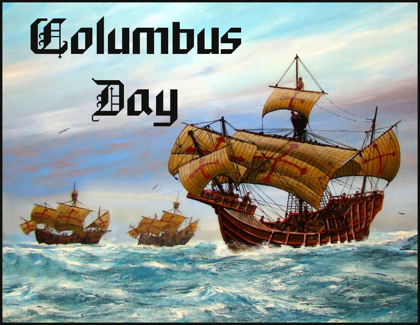
Columbus Day commemorates the landing of Christopher Columbus in the New World on October 12, 1492. The Italian-born explorer intended to chart a western sea route to China, India and the fabled gold and spice islands of Asia.
Halloween
USA (October 31)
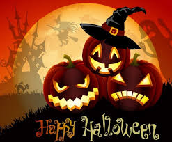
Evolving from the ancient Celtic holiday, modern Halloween has become less about ghosts and more about costumes& candy. The Celts marked the end of the harvest season and the beginning of winter. They believed that transition between the seasons was a bridge to the world of the dead.
Day of the Dead
Mexico (Nov. 1-2)
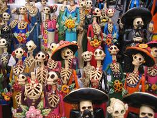
Día de los Muertos is celebrated in Mexico between October 31st and November 2nd. Mexicans remember and honor their deceased loved ones. They visit cemeteries, decorate the graves and spend time in the presence of their deceased friends.
Melbourne Cup Day
Melbourne, Au (November 3)
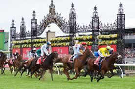
Melbourne Cup Day is one of Australia's most popular social and racing events. The main racing event takes place at the Flemington Racecourse in Melbourne, Victoria. More than 100,000 people usually attend Flemington Racecourse.
Remembrance Day
Australia (Nov. 11)
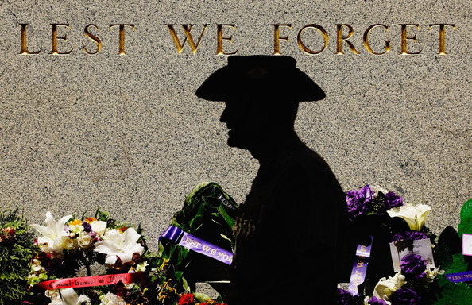
This year 11 November marks the 97th anniversary of the Armistice which ended the First World War (1914-18). Each year on this day Australians observe one minute's silence at 11 am, in memory of those who died or suffered in all wars and armed conflicts.
Veterans Day
USA (November 11)
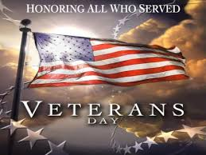
On the 11th hour of the 11th day of the 11th month of 1918, an armistice was declared between the Allied nations and Germany in the First World War, then known as "the Great War". November 11th became a legal federal holiday in the US in 1938.
Festival of Lights (Diwali)
India (November 11-15)
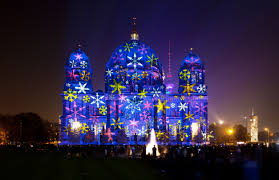
The history of Diwali is replete with legends which are moored to the stories of Hindu religious scriptures, mostly the Puranas. The central theme of all legends point out to the classic truth of the victory of the good over the evils.
Thanksgiving Day
USA (November 26)
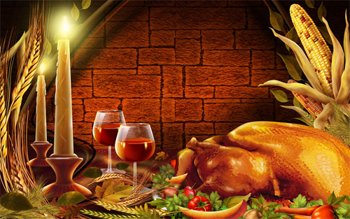
In September 1620, a small ship called the Mayflower left England, carrying 102 passengers-an assortment of religious separatists seeking a new home to freely practice their faith and other individuals lured by the promise of prosperity and land ownership in the New World.
F1 Grand Prix
Abu Dhabi, UAE (November 29)

The Abu Dhabi Grand Prix is a Formula One race. It was announced in early 2007 at the Abu Dhabi F1 Festival in the United Arab Emirates. The first race took place on November 1, 2009, held at the Hermann Tilke designed Yas Marina Circuit.